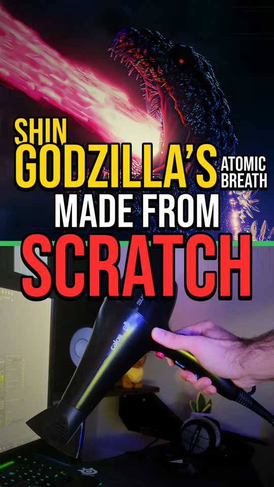
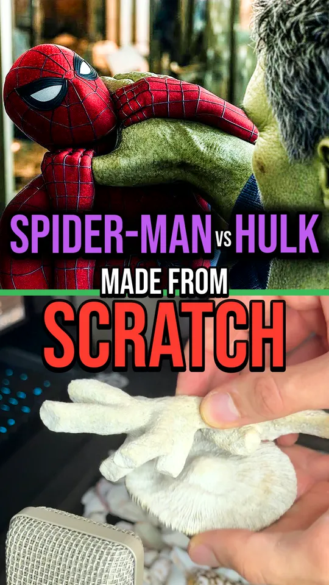
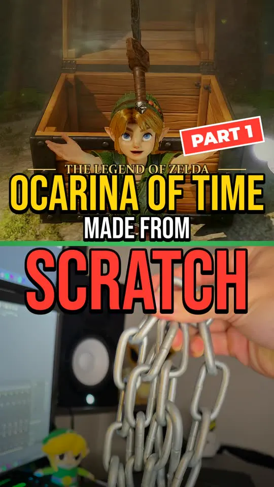
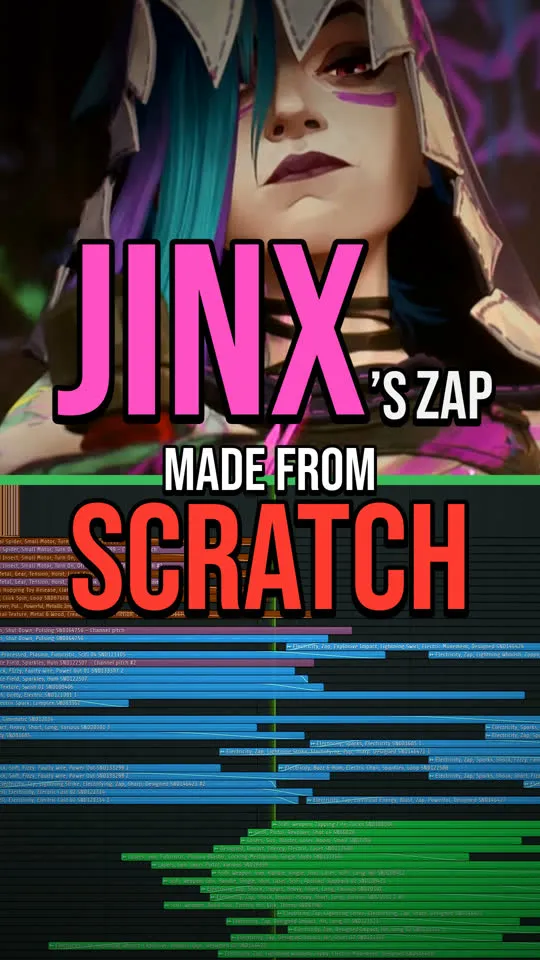
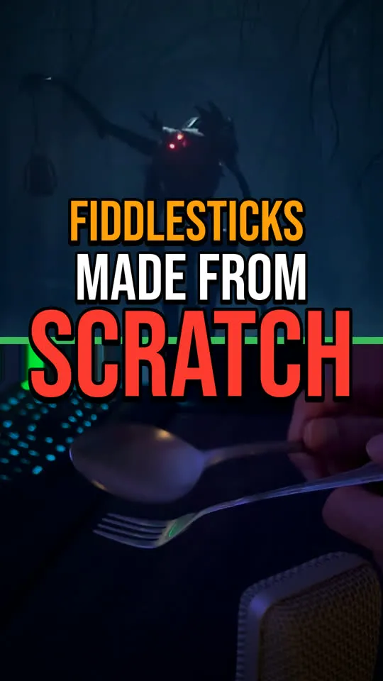

Sound design series · 3.4M+ views
Godzilla and other iconic sounds, made from scratch
SCRATCH is my sound design series: I mute a famous scene and rebuild every sound with everyday objects, a balloon, a hair dryer, my voice. Dry first, then with FX.
Any sound, rebuilt from everyday objects.
The same method I use on client work.
-

Thor vs Doom
NEW
-

Godzilla’s roar
1.4M+ views
-

Shin Godzilla’s atomic breath
820K+ views
-

Godzilla’s atomic breath
640K+ views
-

Shin Godzilla’s atomic breath, Part 2
300K+ views
Views across Instagram, TikTok and YouTube, as of 23 Nov 2026. Film and game scenes © their studios; all sound redone.
More SCRATCH, layer by layer
-

Spider-Man vs Hulk
-

Optimus Prime’s transformation
-

Optimus Prime’s transformation, Part 2
-

Zelda’s treasure chest
-

Jinx’s zap
-

Fiddlesticks
Videos play right here: the YouTube player loads only when you click (privacy). Film scenes belong to their studios; all sound redone.
The same method, on your project
Every SCRATCH episode uses the tools of real client work: recording real sources, layering, processing and mixing to picture. If you need sounds with this kind of character, see sound design for film and video, game sound design or foley, or browse my professional work.
Want a sound like this for your film, game or ad?